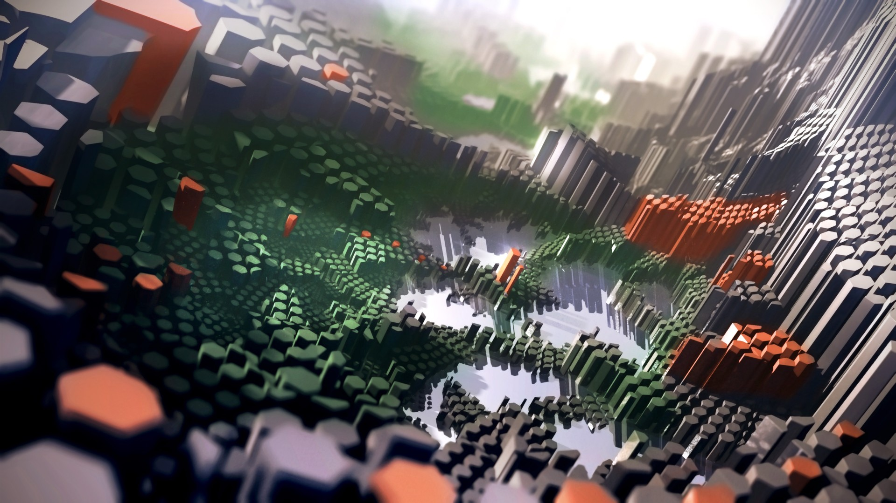

Sport - Communes, régions, Belgique, monde, sports – Toute ... GO Sport : magasins de sport. Vélos, skis, articles et matériel de sport pour la randonnée, la musculation, le fitness, le tennis, le running, les sports d'équipe. Trouvez les magasins proches de chez vous !
Sport | Radio Okapi Visit ESPN to get up-to-the-minute sports news coverage, scores, highlights and commentary for NFL, MLB, NBA, College Football, NCAA Basketball and more.
Logiciels Sport-Plus Inc. Le site officiel du sport. L'ancien entraîneur et Directeur technique national Dominique Nato, seul candidat en lice, a été élu ce samedi président de la Fédération française...
Sport — TSA nederlands | français. nederlands | français | français
Sport - Seneweb Suivez toute l'actualité football: dernières infos, interviews, vidéos des plus beaux matchs etbuts, calendrier, résultats et classements des compétitions en direct avec RMC Sport
Sport Heroes Le sport en direct sur L'Équipe. Les informations, résultats et classements de tous les sports. Directs commentés, images et vidéos à regarder et à partager
Rallye Sport Datsun Experts – Rallye Sport Datsun Experts sport Racisme, sexisme, grossophobie: un jeune sur trois victime de discrimination Un jeune joueur de football sur trois a été victime de discrimination, comme du racisme, sexisme et ...
Sport - L'Obs 2021. március. 22. 14:04 hvg.hu/MTI Sport Nem jutott ki a tokiói olimpiára a férfipárbajtőr-csapatunk A legutóbbi, 2016-os ötkarikás játékokon bár más összeállításban, de bronzérmet szerzett a magyar válogatott.
Sport | Radio Okapi
2021.03.26 15:50

Aller au contenu principal Toggle navigation Accueil Actualité Toute l actualité Politique Économie Société Culture Environnement Sport Revue de Presse Émissions Dialogue entre Congolais L invité du jour Parole aux auditeurs Okapi service Okapi Ecole Coronavirus : parlons-en Maïsha Bora Droits et Citoyenneté Parité et Famille Echos du développement 100% Jeunes Grande interview Geek Identité culturelle Info Kin Etoile Nations-unies Congolais de l étranger Urban Scene Ngoma ya Kwetu Échos d économie Anciennes émissions Journaux Journal kikongo Journal lingala Journal swahili Journal tshiluba Écouter en direct Écouter Radio Okapi Écouter Radio Okapi Enfant Écouter Radio Okapi sur TuneIn #CORONAVIRUS
Accueil Actualité Toute l actualité Politique Économie Société Culture Environnement Sport Revue de Presse Émissions Dialogue entre Congolais L invité du jour Parole aux auditeurs Okapi service Okapi Ecole Coronavirus : parlons-en Maïsha Bora Droits et Citoyenneté Parité et Famille Echos du développement 100% Jeunes Grande interview Geek Identité culturelle Info Kin Etoile Nations-unies Congolais de l étranger Urban Scene Ngoma ya Kwetu Échos d économie Anciennes émissions Journaux Journal kikongo Journal lingala Journal swahili Journal tshiluba Écouter en direct Écouter Radio Okapi Écouter Radio Okapi Enfant Écouter Radio Okapi sur TuneIn #CORONAVIRUS Actualité Actualité Articles de la catégorie « Sport »
Articles de la catégorie « Sport »
Eliminatoires-CAN 2021 : les Léopards ont regagné Kinshasa pour jouer la Gambie, un match pour l’honneur
26/03/2021 - 08:52 Sport , Actualité / Gabon , Léopards , Gambie , CAN , Football
Eliminatoires CAN-2021 : la RDC sera absente au Cameroun
25/03/2021 - 19:01 Sport , Actualité / Eliminatoires , Can 2021 , RDC , absente , Cameroun
Gabon-RDC : les Léopards ont quitté Kinshasa pour Franceville
Gabon-RDC : Yannick Bolasie s’est dit contrarié de ne pas être présent
23/03/2021 - 12:26 Sport , Actualité / Yannick Bolasie , Gabon , CAN , Cameroun 2021 , Léopards
Gabon-RDC : 28 Léopards répondent à l’appel de Christian N sengi
23/03/2021 - 08:09 Sport , Actualité / Léopards , Gabon , CAN , Cameroun 2021
Gabon-RDC : les Léopards débutent la préparation ce lundi
22/03/2021 - 08:12 Sport , Actualité / Gabon , Léopards , Football , Can 2021
Eliminatoires CAN 2021 : le sélectionneur fait appel à Arsène Zola, Joël Beya et Dark Kabangu
18/03/2021 - 18:55 Sport , Actualité / Léopards
CAF-C1: Mazembe relégué en dernière position
16/03/2021 - 19:35 Sport , Actualité /
CAF-C1 : V.Club battu et régresse en 3e position
16/03/2021 - 18:04 Sport , Actualité / Caf , V Club 1 2 3 4 5 6 7 8 9 … suivant › dernier »
Accueil Actualité Toute l actualité Politique Économie Société Culture Environnement Sport Revue de Presse Émissions Dialogue entre Congolais L invité du jour Parole aux auditeurs Okapi service Okapi Ecole Coronavirus : parlons-en Maïsha Bora Droits et Citoyenneté Parité et Famille Echos du développement 100% Jeunes Grande interview Geek Identité culturelle Info Kin Etoile Nations-unies Congolais de l étranger Urban Scene Ngoma ya Kwetu Échos d économie Anciennes émissions Journaux Journal kikongo Journal lingala Journal swahili Journal tshiluba Écouter en direct Écouter Radio Okapi Écouter Radio Okapi Enfant Écouter Radio Okapi sur TuneIn #CORONAVIRUS Écouter en ligne À propos Moyens techniques Grille des programmes Charte de bonne conduite Abonnements Comment s inscrire et commenter les articles de Radio Okapi Contact
Vous pouvez recevoir des alertes des publications de radiookapi.net par e-mail. Cliquer dans cette zone et suivez les instructions.